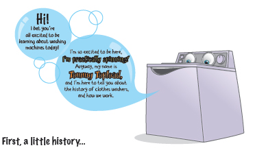

“Clothes washers have been around for over 200 years, but in the early days they were very simple contraptions. What you had was basically a large tub you filled with water that you pre-heated with some kind of mechanism that sloshed the clothes around, and a wringer that you ran the clothes through to squeeze the water out. Those wringers were no joke, they could squash your fingers if you weren’t careful! Emptying the tub was easy though, all you had to do was pull a plug and the water dumped out onto the ground.”